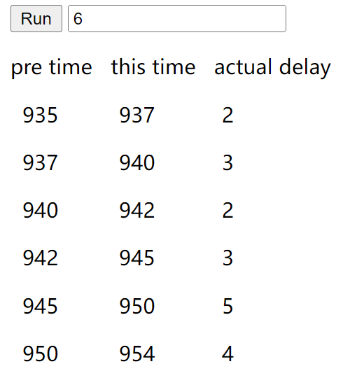

MDN-setTimeout
理解setTimeout()
1. 非数字延迟值静默转化为数字
- 如果传递给
setTimeout()的delay（延迟值）不是一个数字，它会被隐式强制类型转换（Type coercion）静默为一个数字
- 对于数字字符串而言，这种转换会很简单，如
"1000"会被转换为1000，依然会生效// 数字字符串的情况 setTimeout(() => { console.log("Delay for 1 second."); }, "1000"); // Delay for 1 second. （1秒后打印）
- 但是很多情况下，隐式强制类型转换（implicit type coercion）并不会带来期待的延迟值结果，例如
"1 second"会被强制转换为数字0，代码会立即执行setTimeout(() => { console.log("Delay for 1 second."); }, "1 second"); // elay for 1 second. （立即打印）
- 所以在请务必使用非负数的整数
delay值
2. 使用异步函数
setTimeout()是一个异步函数（asynchronous function），这意味着定时器函数（timer function，即传递给setTimeout()的第一个参数）不会暂停函数堆栈中其它函数的执行，换句话说，setTimeout()不是用来制造暂停的，不同的定时器函数之间的延迟独立，不会影响彼此setTimeout(() => { console.log(5); }, 5000); setTimeout(() => { console.log(2); }, 2000); setTimeout(() => { console.log(1); }, 1000); // 打印 // 1 (1秒后打印) // 2 (2秒后打印) // 5 (5秒后打印)
- 要创建一个只在完成另一个函数之后触发一个函数的进程，可以使用
Promise
3. this问题
- 将普通的标准方法传入
setTimeout()的第一个参数，该方法中的this可能并不如开发者的预想，这一个问题可以查看📞this操作符- 传给
setTimeout的计时器函数是在一个与setTimeout()函数不同的执行上下文中被调用的
- 为被调用函数设置的
this关键字的通用规则适用于这个计时器函数，如果没有通过apply()，bind()等指定设置this值，它会默认为全局对象，严格模式下为undefined
- 它不会与调用
setTimeout()的函数的this值相同
// 计时器函数的this默认为全局对象 globalThis.a = "a"; const obj = { a: "objA", method() { console.log(this); console.log(this.a); }, }; obj.method(); setTimeout(obj.method); // 浏览器中的打印 Object { a: "objA", method: method() } objA Window {} a // node环境下会打印undefined💡注意，在node环境下，标准函数的this并非全局对象，而是一个Timeout对象，如下Timeout { _idleTimeout: 1, _idlePrev: null, _idleNext: null, _idleStart: 41, _onTimeout: [Function: method], _timerArgs: undefined, _repeat: null, _destroyed: false, [Symbol(refed)]: true, [Symbol(kHasPrimitive)]: false, [Symbol(asyncId)]: 5, [Symbol(triggerId)]: 1 } - 传给
setTimeout()既然是一个方法，是否可以调用一个call()或者apply()指定一个this以解决这个问题？答案是不可以，而且在浏览器环境会抛出异常setTimeout.call(obj, obj.method); // 谷歌浏览器表示这是一个非法调用 Uncaught TypeError: Illegal invocation at <anonymous>:12:12 // 火狐浏览器表示在窗口中没有为setTimeout指定this的的实现接口 Uncaught TypeError: 'setTimeout' called on an object that does not implement interface Window. <anonymous> debugger eval code:12💡注意node环境下，上述语句不会抛出异常，它会忽略传递的thisArg,使用自己定义的Timeout对象作为this值
4. 解决this问题的方案
4.1 使用箭头函数
- 给
setTimeout()传递箭头函数， 这个箭头函数的this为定义时确定，就是setTimeout()所处作用域的this// 使用箭头函数 function A() { this.a = "funcA"; setTimeout(() => { console.log(this.a); }); } A(); // funcA
4.2 函数包裹（USE A WRAPPER FUNCTION）
- 如果方法需要使用一个对象进行调用，可以使用函数包裹的方式，将需要运行的函数额外使用一个进行包裹，然后在该额外函数中进行调用，这一就能保证运行的函数的
this为调用对象globalThis.a = "a"; const obj = { a: "objA", method() { console.log(this.a); }, }; setTimeout(function () { obj.method(); // objA });
4.3 使用Bind()
- 将要运行的函数调用bind()指定一个固定的
this，获取一个拥有固定this值的绑定函数，这个绑定函数可以直接作为第一个参数传递给setTimeout()以预期获得想要的值globalThis.a = "a"; const obj = { a: "objA", method() { console.log(this.a); }, }; setTimeout(obj.method.bind(obj)) // objA
5. 实际延迟超过指定延迟时间的原因
- 在💡注意，由于代码执行需要时间，以及设备的指令执行需要时间，所以开始执行代码的延迟时间可能会比期待的值（delay 值）长，最小延迟时间为为4ms,这也是为什么说“马上”而不是立即的原因 的定时器部分，简单介绍过代码的实际延迟执行时间是比指定延迟时间长一点的，有如下几个原因
5.1 嵌套超时（nested timeouts）
- HTML标准规范 指出，在
setTimeout()连续嵌套调用（nested call）五次后，浏览器会强制执行最小4ms的超时- 前四次的嵌套
setTimeout()的延迟时间会在0~3ms内
- 从第五次开始都会大于等于4ms
- 前四次的嵌套
- 使用递归可以很好的测算每次嵌套
setTimeout时间花费的时间，可以同时利用DOM进行显示记录<body> <button>Run</button> <input type="number" value="0" /> <pre>pre time this time actual delay</pre> <div id="log"></div> </body> <script> const btn = document.querySelector("button"); const log = document.querySelector("#log"); const input = document.querySelector("input"); let last = 0; function logline(now) { const newLine = document.createElement("pre"); newLine.textContent = ` ${pad(last)} ${pad( now )} ${Math.abs(now - last)}`; log.appendChild(newLine); last = now; } function timeout(times) { logline(new Date().getMilliseconds()); if (times > 0) { setTimeout(timeout, 0, times - 1); } } function run() { const times = input.value; while (log.lastElementChild) { log.removeChild(log.lastElementChild); } if (times <= 0) { const tips = document.createElement("p"); tips.textContent = "至少要嵌套一次"; log.appendChild(tips); return; } last = new Date().getMilliseconds(); setTimeout(timeout, 0, times - 1); } function pad(num) { return num.toString().padStart(3, "0"); } btn.addEventListener("click", run); </script>
{kind=link}
5.2 非活动选项卡中的超时（Timeouts in inactive tabs）
- 为了减少后台选项卡（tab页）的负载（和电池相关使用），浏览器会在非获得选项卡中执行最小超时延迟；如果一个页面正在使用Web Audio API Context播放声音，浏览器也会不强制执行（waive）这个限制
- 具体实现取决于浏览器
- 火狐桌面版(Firefox Desktop)和谷歌浏览器都对未激活的选项卡有1秒的最小超时时间
- 安卓版火狐对不活跃的选项卡至少有15分钟的超时时间，可能会完全卸载它们
- 如果选项卡中包含AudioContext，火狐不会限制它的活动
5.3 晚超时（late timeout）
- 如果页面（或操作系统/浏览器）忙于其他任务，则延迟时间也可能比预期的晚
- 一个重要的情况是
setTimeout()是异步函数，即使设置的延迟是0，其后同步代码都会先于异步代码执行，如果同步代码是复杂的运算，setTimeout()实际执行延迟会大于设定的延迟时间，如下const last = new Date().getMilliseconds(); setTimeout(() => { console.log("实际延迟时间：", new Date().getMilliseconds() - last); }, 0); let sum = 0; for (let i = 0; i < 1000000; i++) { sum += i; } // 实际延迟时间： 10 (因设备而有些许差异，且每次执行的值都有所不同)
5.4 页面加载期间的超时延迟（Deferral of timeouts during pageload）
- 当选项卡正在加载是，已加载脚本中的
setTimeout()计时器会被延迟执行（defer）
- 超时的额外延迟时间或者说机器器开始计算延迟的时间是主线程被认为是闲置的时候
6. WebExtension后台页面和计时器
- 在WebExtension 中，
setTimeout()并不可靠地工作，不要使用setTimeout()而是使用警报API
7. 最大延迟值（Maximum delay value）
delay最大使用32位带符号整数表示，当使用延迟大于2147483647ms（约24.8天）时，将导致整数溢出